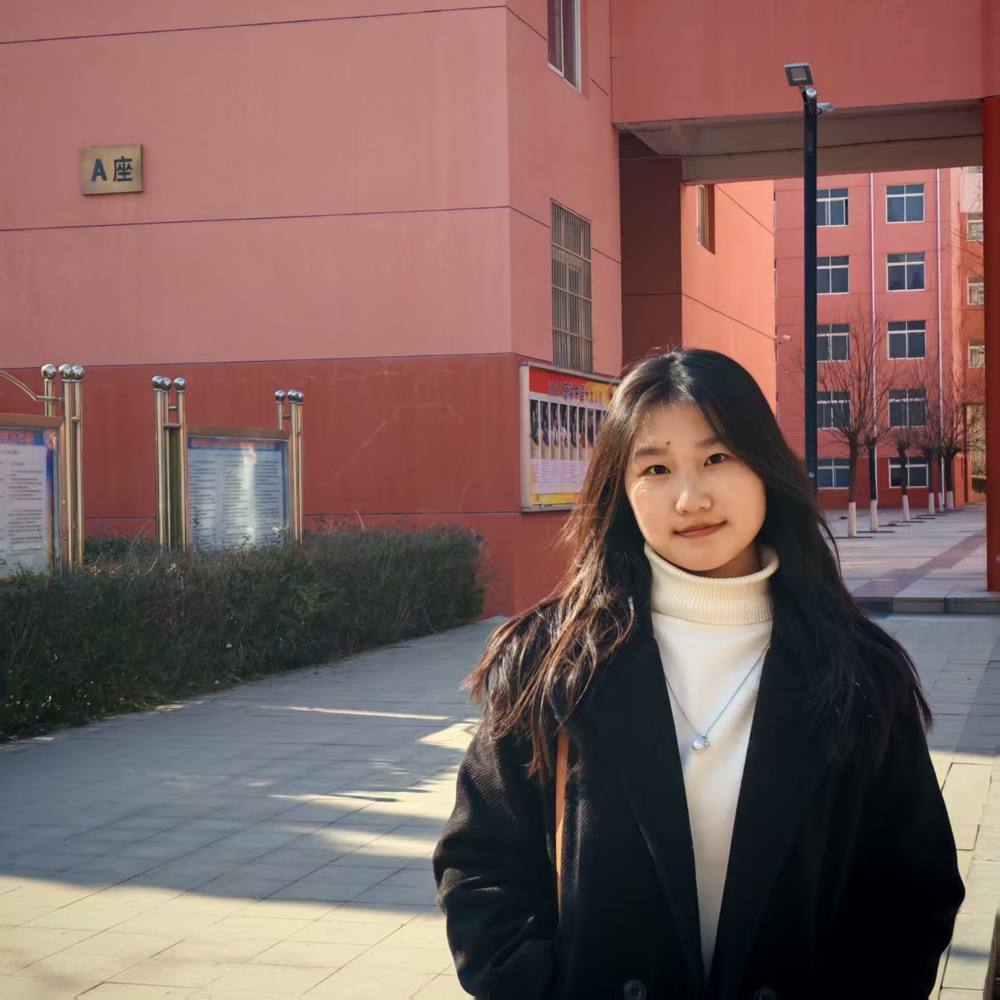

<>
我是一级标题
我是二级标题
我是六级标题
加油加油加油Camellia!
加粗
加粗
倾斜
倾斜
删除
删除
下划线
下划线
想，全是问题；做，才有答案。想，全是问题；做，才有答案。
想，全是问题；做，才有答案。想，全是问题；做，才有答案。
你有多自律，就有多自由。
作者：Camellia
2025-1-18
我是div标签，我独占一行
我是div标签，我独占一行
跨度 跨距
span
span
图像标签的使用


超链接标签
腾讯
腾讯
腾讯
传智播客
返校照片
空链接
这是个空链接
下载文件：地址链接的是文件exe或zip压缩包形式
下载文件返校照片
网页元素的链接
锚点链接
目录
1.早年经历
2.演艺经历
3.主要作品
4.获奖记录
5.个人评价
1.早年经历
1987年10月16日，赵丽颖出生于河北廊坊市的一个普通家庭，祖辈为农民，她亦出身于农村，而农村的生活经历，则磨练出了她坚强的意志，也造就了其坚韧顽强的个性 。
小时候的赵丽颖就特别喜欢看别人演戏，也幻想自己有一天能够成为演员，可她的父亲只是一名派出所民警，母亲也只是在百货商店从事销售员一职，家中完全没有门路也没有一定的经济条件去支持她实现儿时的梦想 。
长大后，赵丽颖考入了廊坊市电子信息工程学校空乘专业，但毕业后的她却由于家庭经济条件的限制，不得不放弃投考空姐的机会。而只能选择在自家附近的管道防腐公司做销售工作 。
2.演艺经历
2007年，参演电影处女作《镖行天下之牡丹阁》，在片中饰演牡丹的妹妹小红；1月，与郭晓东、刘孜、归亚蕾共同出演爱情剧《世纪不了情》；同年，在民国爱情剧《春去春又回》中饰演温婉可人的任洁儿 。
2008年，在民国情感剧《锁清秋》中饰演聪明机灵的丫鬟文雁。
2009年1月，主演数字电影《爱杀九河堂》；5月，在田中裕子、余少群主演的宫廷剧《苍穹之昴》中饰演性情温顺的玲儿，这也是赵丽颖首次出演古装剧 ；8月，获得第三届全球华人“非常短片”创意大赛“最佳人气女演员” 。
2010年1月，主演年代剧《锣鼓巷》，饰演少女时期的李秋萍；6月，在情感偶像剧《佳期如梦》中改变荧屏形象，饰演性格叛逆、迷恋朋克的90后女孩安安 ；同年，在古装剧《红楼梦》中饰演端雅稳重、知书达礼的邢岫烟，并凭借该剧获得观众的关注
。
2011年，与徐峥联袂主演古装剧《大内低手》，在剧中饰演善良可爱的陈馨儿，这也是她首次参演喜剧类型的电视剧
；同年，签约海润影视集团；4月，出演情感剧《新玉观音》，在剧中饰演乖巧清纯的阿静；7月16日，在古装爱情剧《新还珠格格》中饰演甜美端庄、深明大义的晴儿
；9月11日，与李念、印小天合作出演都市情感剧《夏妍的秋天》，在剧中饰演家境优厚、个性温柔的女孩唐小然 。
2012年10月，出演都市情感剧《极品男女日记》，在剧中饰演活力四射的都市女孩楚扬 ；同年，在古装爱情剧《宫锁珠帘》中饰演冷艳大方的十九福晋百合 。
2013年5月5日，赵丽颖主演的古装励志剧《陆贞传奇》上映，她在剧中饰演聪明睿智的一代女相陆贞
，并与陈晓共同演唱该剧的片尾曲《心情》；该剧首播期间在全国网收视统计中占有平均8.72%的收视份额；在csm46收视统计中排名同时段第一，在全年收视率统计中排名年度第三；此外，该剧还被日本、马来西亚、韩国等国家引进播出；7月13日，主演古装神话剧《追鱼传奇》，在剧中饰演机灵可爱的鲤鱼精红绫
；该剧首播两日全国网的平均收视率达到1.25%，平均收视份额为8.51%，两项成绩均排名同时段第一；大结局当日则以10.75%的收视份额获得同时段收视冠军
；8月13日，赵丽颖主演的古装爱情片《宫锁沉香》上映，她在片中改变银幕形象，饰演心胸狭窄、笑里藏刀的反派角色琉璃 ；11月20日，在“青春的选择”2013年度盛典中，获得内地最受欢迎女演员奖
；12月，获得第四届乐视盛典内地最受欢迎女演员奖以及国剧盛典最受观众喜爱的新人女演员奖 。
返回顶部
3.主要作品
风吹半夏，与风行，楚乔传，花千骨
4.获奖记录
除了获得人气女演员的荣誉，她还荣膺了第34届中国电视剧飞天奖优秀女演员奖、第37届大众电影百花奖最佳女配角、第17届亚洲电影大奖新世代奖以及第32届金鹰奖最佳女主角。 这一系列的奖项证明了她在演艺圈的卓越地位和观众的深厚喜爱。
她的成就不仅需要个人的努力，也离不开团队的支持。 在领奖时，赵丽颖表示：“感谢所有一直支持我的观众与合作伙伴，你们的鼓励是我不断前行的动力。
5.个人评价
赵丽颖是一位人气与实力兼具的演员 。她凭借清丽可爱的外貌深得观众的喜欢，并因此获得了很好的路人缘。随着电视剧《花千骨》的播出，她在影视圈也集聚了更高的人气
。作为荧屏花旦中的演技担当，她用心演好每一部戏，靠作品站稳脚跟。她不断磨砺演技，在影视剧中塑造了多个深入人心的角色。她用眼神精准地表达人物，通过富有层次感的表演将剧本上的文字鲜活地呈现给观众。她的表演灵动而不着痕迹
，即使是人物设定并不十分讨喜的角色也被她演绎得恰到好处 。（腾讯网、网易、中国日报网、《半岛都市报》综合评）
空 格
小于号 <
大于号 >